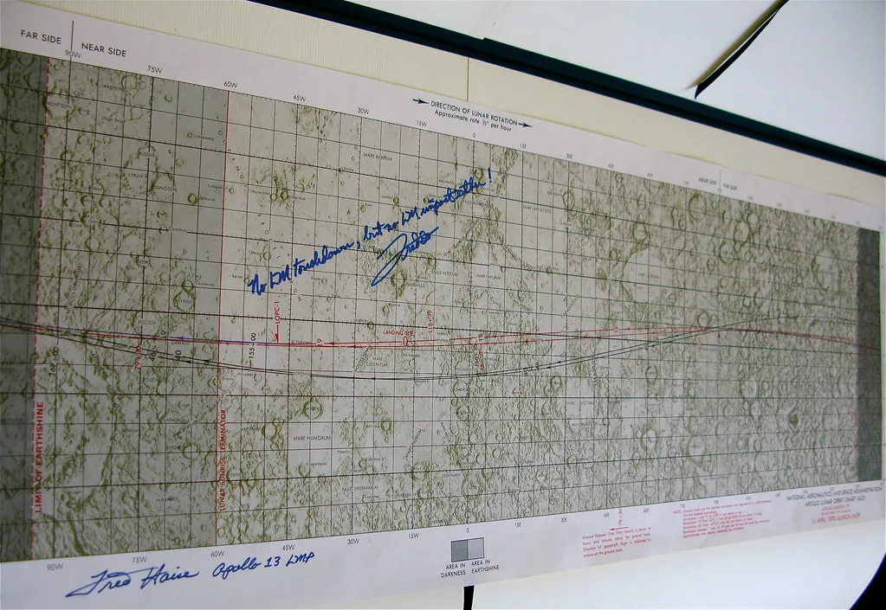

코스피, '검은 목요일' 7.57% 폭락 하루 만에 반등…5650선 회복
코스피가 16일 전날의 대규모 급락을 딛고 반등에 성공했다. 전날인 15일 코스피는 전장 대비 454.59포인트(7.57%) 급락한 5,554.22로 마감하며 '검은 목요일'로 불릴 만큼 충격적인 하루를 보냈다. 코스피·코스닥 양 시장에는 두 달 반 만에 서킷브레이커가 동반 발동되기도 했다. 불과 7거래일 전까지만 해도 '7천피'를 넘보던 지수가 순식간에 5천대로 추락했다는 점에서 투자자들의 충격은 더 컸다. 하지만 이날 장 초반 코스피는 전날 종가보다 약 1.5~1.8% 오른 수준에서 거래를 시작했고, 코스닥 역시 1%대 상승 출발하며 시장 전반에 안도감이 번졌다.
전날 급락의 배경에는 중국 창신메모리(CXMT)의 약진과 증설에 따른 공급 확대 우려, 그리고 인공지능(AI) 인프라 투자의 자금조달 병목에 대한 경계감이 겹쳤다. 미국 증시에서 기술주와 반도체주가 동반 약세를 보인 점도 국내 증시에 고스란히 전이됐다는 분석이 나온다. 여기에 신용거래융자 잔고가 34조원대에 달해 있던 상황에서 지수가 흔들리자 반대매매 물량이 쏟아지며 낙폭을 키웠다는 지적도 제기됐다.

이날 반등의 동력은 크게 두 갈래로 분석된다. 먼저 전날 급락 폭이 과도했다는 인식 속에 반도체 대형주를 중심으로 저가 매수세가 유입됐다. 삼성전자와 SK하이닉스 등 '삼전닉스'로 불리는 양대 반도체주가 반등을 주도했다는 평가가 나온다. 또한 간밤 미국 뉴욕증시의 3대 주가지수가 미 국채금리 하락에 힘입어 일제히 상승 마감한 점도 국내 투자심리 회복에 보탬이 됐다.
다만 수급 구도를 보면 낙관하기는 이르다는 신호도 뚜렷하다. 이날 장 초반에도 외국인과 기관은 매도 우위를 유지한 반면, 개인 투자자들이 순매수에 나서며 지수를 떠받치는 모습이 나타났다. 전날 급락의 트리거가 됐던 신용거래 잔고 역시 단기간에 해소되기 어려운 수준이어서, 추가적인 반대매매 물량이 변동성을 다시 키울 수 있다는 우려가 시장 한편에 남아 있다.

근본적인 불안 요인으로 꼽히는 AI 투자 수익성 논란도 아직 가라앉지 않았다. 글로벌 증시 전반에서는 빅테크 기업들의 막대한 AI 인프라 투자가 실제 수익으로 이어질 수 있을지에 대한 의문이 계속 제기되고 있고, 이런 불확실성이 반도체를 비롯한 기술주 전반의 밸류에이션에 부담으로 작용하고 있다는 분석이다. 미국의 물가 지표에 따른 추가 긴축 가능성 역시 시장이 주시하는 변수로 남아 있다. 여기에 더해 중국 창신메모리의 증설 속도가 예상보다 빠르다는 관측이 나올 때마다 국내 메모리 업체들의 가격 결정력에 대한 투자자들의 불안감이 재차 고개를 드는 양상이다.
증권가에서는 이번 반등을 본격적인 상승 전환으로 보기보다는, 급락 이후의 기술적 되돌림 성격이 강하다는 데 무게를 두고 있다. 전문가들은 외국인 수급이 매수 우위로 돌아서는지, 그리고 신용거래 잔고가 추가로 정리되는 과정에서 시장이 얼마나 안정적으로 이를 소화하는지를 향후 변동성을 가늠할 핵심 지표로 지목한다. 당분간 코스피는 반등과 재차 하락 압력이 교차하는 등락장을 이어갈 가능성이 크다는 전망이 나온다. 일부 증권사는 당분간 투자자들에게 섣부른 추격 매수보다는 분할 대응과 리스크 관리를 우선하라고 권고하고 있다.